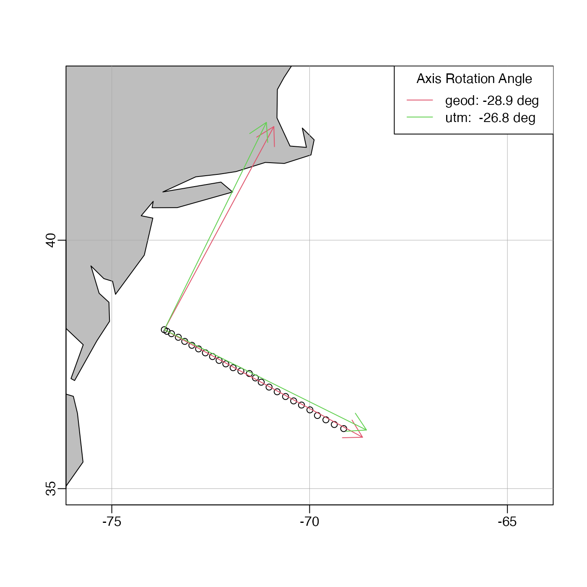

The method, which may be useful in determining coordinate systems for a mooring array or a ship transects, calculates (x,y) from distance calculations along geodesic curves. See “Caution”.
geodXy(
longitude,
latitude,
longitudeRef,
latitudeRef,
debug = getOption("oceDebug")
)vector of longitude and latitude
numeric reference location. Poor results
will be returned if these values are not close to the locations described
by longitude and latitude. A sensible approach might be
to set longitudeRef to longitude[1], etc.
an integer specifying whether debugging information is
to be printed during the processing. This is a general parameter that
is used by many oce functions. Generally, setting debug=0
turns off the printing, while higher values suggest that more information
be printed. If one function calls another, it usually reduces the value of
debug first, so that a user can often obtain deeper debugging
by specifying higher debug values.
geodXy returns a data frame of x and y,
geodesic distance components, measured in metres.
The calculation is as follows.
Consider the i-th point in the longitude and latitude
vectors. To calculate x[i], geodDist() is
used is to find the distance
along a geodesic curve connecting (longitude[i], latitude[i]) with
(longitudeRef, latitude[i]). The resultant distance
is multiplied by -1 if longitude[i]-longitudeRef is negative,
and the result is assigned to x[i].
A similar procedure is used for y[i].
This scheme is without known precedent in the literature, and users should read the documentation carefully before deciding to use it.
On 2015-11-02, the names of the arguments were changed from lon, etc., to
longitude, etc., to be in keeping with other oce functions.
On 2017-04-05, four changes were made.
Default values of longitudeRef and latitudeRef were removed,
since the old defaults were inappropriate to most work.
The argument called rotate was eliminated, because it only made
sense if the mean resultant x and y were zero.
The example was made more useful.
Pointers were made to lonlat2utm(), which may be more useful.
Other functions relating to geodesy:
geodDist(),
geodGc(),
geodXyInverse()
# \donttest{
# Develop a transect-based axis system for final data(section) stations
library(oce)
data(section)
lon <- tail(section[["longitude", "byStation"]], 26)
lat <- tail(section[["latitude", "byStation"]], 26)
lonR <- tail(lon, 1)
latR <- tail(lat, 1)
data(coastlineWorld)
mapPlot(coastlineWorld, projection="+proj=merc",
longitudelim=c(-75,-65), latitudelim=c(35,43), col="gray")
mapPoints(lon, lat)
XY <- geodXy(lon,lat,mean(lon), mean(lat))
angle <- 180/pi*atan(coef(lm(y~x, data=XY))[2])
mapCoordinateSystem(lonR, latR, 500, angle, col=2)
# Compare UTM calculation
UTM <- lonlat2utm(lon, lat, zone=18) # we need to set the zone for this task!
angleUTM <- 180/pi*atan(coef(lm(northing~easting, data=UTM))[2])
mapCoordinateSystem(lonR, latR, 500, angleUTM, col=3)
legend("topright", lwd=1, col=2:3, bg="white", title="Axis Rotation Angle",
legend=c(sprintf("geod: %.1f deg", angle),
sprintf("utm: %.1f deg", angleUTM)))

# }